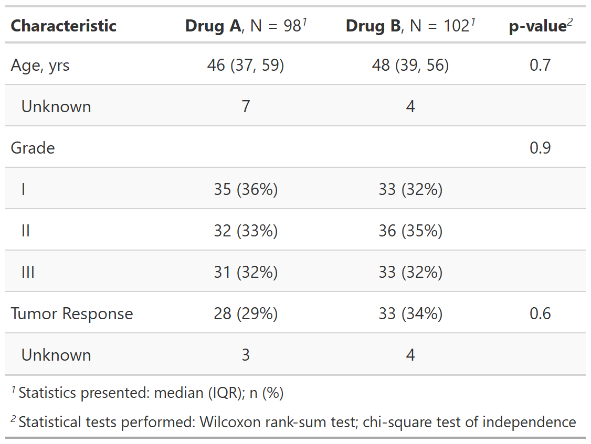
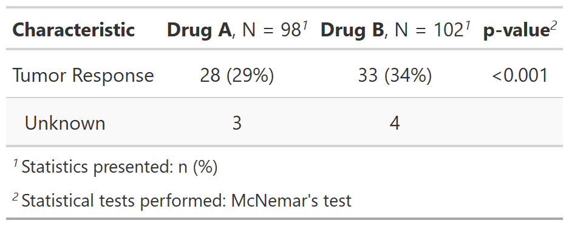

| add_p {gtsummary} | R Documentation |
Adds p-values to tables created by tbl_summary by comparing values across groups.
add_p( x, test = NULL, pvalue_fun = NULL, group = NULL, include = everything(), exclude = NULL )
x |
Object with class |
test |
List of formulas specifying statistical tests to perform,
e.g.
Tests default to |
pvalue_fun |
Function to round and format p-values.
Default is style_pvalue.
The function must have a numeric vector input (the numeric, exact p-value),
and return a string that is the rounded/formatted p-value (e.g.
|
group |
Column name (unquoted or quoted) of an ID or grouping variable.
The column can be used to calculate p-values with correlated data (e.g. when
the test argument is |
include |
Variables to include in output. Input may be a vector of
quoted variable names, unquoted variable names, or tidyselect select helper
functions. Default is |
exclude |
DEPRECATED |
A tbl_summary object
If you like to consistently use a different function to format p-values or
estimates, you can set options in the script or in the user- or
project-level startup file, '.Rprofile'. The default confidence level can
also be set. Please note the default option for the estimate is the same
as it is for tbl_regression().
options(gtsummary.pvalue_fun = new_function)
Example 1

Example 2

Emily C. Zabor, Daniel D. Sjoberg
See tbl_summary vignette for detailed examples
Other tbl_summary tools:
add_n(),
add_overall(),
add_q.tbl_summary(),
add_stat_label(),
bold_italicize_labels_levels,
bold_p.tbl_summary(),
inline_text.tbl_summary(),
modify_header(),
sort_p.tbl_summary(),
tbl_merge(),
tbl_stack(),
tbl_summary()
add_p_ex1 <-
trial[c("age", "grade", "response", "trt")] %>%
tbl_summary(by = trt) %>%
add_p()
# Conduct a custom McNemar test for response,
# Function must return a named list of the p-value and the
# test name: list(p = 0.123, test = "McNemar's test")
# The '...' must be included as input
# This feature is experimental, and the API may change in the future
my_mcnemar <- function(data, variable, by, ...) {
result <- list()
result$p <- stats::mcnemar.test(data[[variable]], data[[by]])$p.value
result$test <- "McNemar\\'s test"
result
}
add_p_ex2 <-
trial[c("response", "trt")] %>%
tbl_summary(by = trt) %>%
add_p(test = response ~ "my_mcnemar")